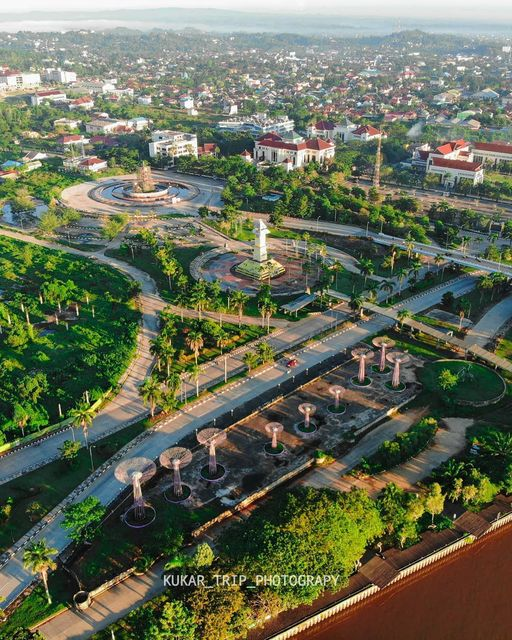
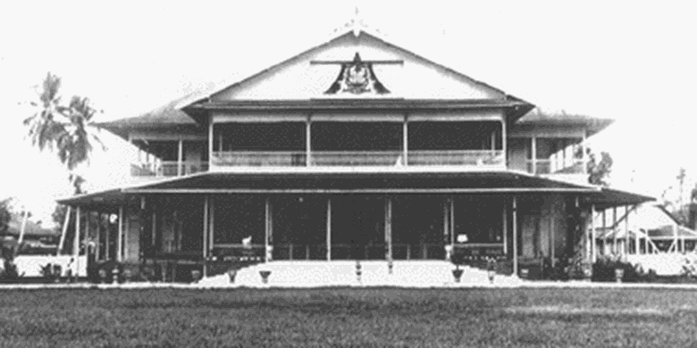
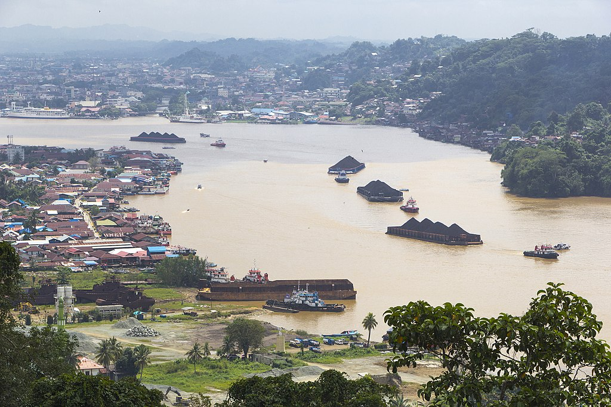
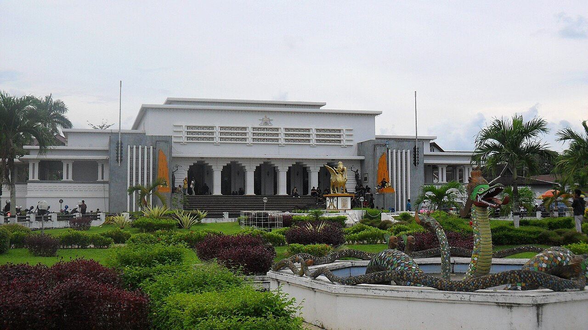
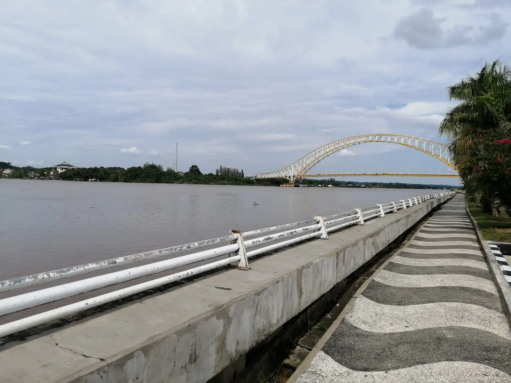

Kota Tenggarong
Kota terbesar di Kabupaten Kutai Kartanegara, Provinsi Kalimantan
Timur, yang juga berperan sebagai ibu kota kabupaten tersebut.
Lebih lanjut

Sejarah

Tenggarong adalah sebuah kota yang memiliki sejarah panjang di
wilayah Kalimantan Timur. Nama Tenggarong sendiri berasal dari kata
"Tenggara" yang berarti arah tenggara, mengacu pada letak
geografisnya di wilayah timur Kalimantan. Kota ini memiliki sejarah
yang kaya, dengan jejak budaya suku Dayak yang mendiami wilayah ini
sejak zaman dahulu.
Geografis

Tenggarong terletak di tepi Sungai Mahakam, menjadikannya kota yang
diapit oleh sungai dan hutan tropis. Secara geografis, kota ini
terletak di bagian timur Provinsi Kalimantan Timur, dengan
ketinggian yang rendah di atas permukaan laut.
Sungai Mahakam menjadi salah satu ciri khas geografis Tenggarong dan
berperan sebagai jalur transportasi utama yang menghubungkan
berbagai daerah di sekitarnya. Namun, seperti banyak kota sungai
lainnya, Tenggarong juga memiliki risiko banjir terutama pada musim
hujan.
Wisata
Tenggarong merupakan kota yang kaya akan wisata alam dan budaya.
Salah satu tujuan populer adalah Taman Nasional Kutai, tempat Anda
dapat menikmati keindahan alam Kalimantan Timur yang meliputi hutan
hujan tropis, sungai, dan kehidupan liar yang unik.
Istana Tenggarong

stana Tenggarong, juga dikenal sebagai Istana Sultan Kutai, adalah
salah satu bangunan bersejarah yang dapat Anda kunjungi di kota ini.
Istana ini adalah bekas kediaman Sultan Kutai Kartanegara yang
dibangun pada abad ke-19 dan sekarang berfungsi sebagai museum yang
menampilkan sejarah dan budaya daerah tersebut.
Tepian Sungai Mahakam

Tepian Sungai Mahakam adalah tempat yang ideal untuk berjalan-jalan
santai. Anda dapat menikmati pemandangan sungai yang menawan,
berinteraksi dengan masyarakat setempat, dan mencicipi kuliner khas
Kalimantan Timur di restoran-restoran yang tersebar di tepian
sungai.